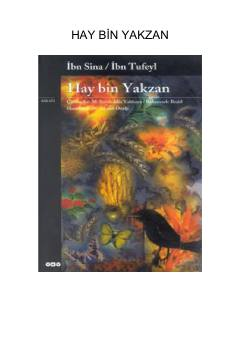

HBIbn Sino va Ibn Tufeylning mashhur falsafiy asarlari to'plami.
Ushbu kitobda sharq falsafasining yirik namoyandalari Ibn Sino va Ibn Tufeylning "Hay bin Yakzan" asarlari jamlangan bo'lib, ular inson tafakkuri va borliq sirlarini o'rganadi. Falsafiy roman janrining ilk namunalaridan biri bo'lgan bu asarlar o'quvchini insonning tabiat va olam bilan aloqalari haqida fikr yuritishga undaydi. Nashr tarjimonlar va tahrir hay'ati tomonidan zamonaviy o'quvchiga tushunarli tilda taqdim etilgan.